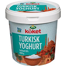

<html>

<head>
    <title>Assignment</title>
    <!-- css  -->
    <link href="css/index.css" type="text/css" rel="stylesheet" />
    <link href="https://fonts.googleapis.com/css?family=Lato" rel="stylesheet">

    <!-- viewport -->
    <meta name="viewport" content="width=device-width, initial-scale=1.0">
</head>

<body>
<!-- header start -->
<header>
    <a href="#">
        <h1 class="logo">
        <span>Mat.se</span>
      </h1>
    </a>
    <span class="logotitle">
          Beställ inom 4 tim 18 min
      </span>
    <nav class="topnav">
        <ul>
            <li><a href="#"><span class="circle">1</span>Leveranstid</a>
            </li>
            <li><a href="#"><span class="circle">2</span>Glöm inte</a>
            </li>
            <li><a href="#"><span class="circle">3</span>Betalning</a>
            </li>
        </ul>
    </nav>
</header>
<!-- header end  -->

<!-- navigation start -->
<nav class="navigation">
    <ul>
        <li><a href=""><span class="circle">1</span>Leveranstid</a>
        </li>
        <li><a href=""><span class="circle">2</span>Glöm inte</a>
        </li>
        <li><a href=""><span class="circle">3</span>Betalning</a>
        </li>
    </ul>
</nav>
<!-- navigation end -->

<!-- section start  -->
<section>
    <div class="titleArea">
        <span class="title">50% RABATT</span>
        <span class="productTitle">Grekisk Yog4hurt 10%</span>
    </div>

    <!-- product intro start -->
    <div class="productIntro">

        <div class="productImage">
            
            <span>298<sup>95</sup></span>
        </div>

        <div class="productDesc">
            <div class="titleAreas">
                <span class="title">50% RABATT</span>
                <span class="productTitle">Grekisk Yog4hurt 10%</span>
            </div>
            <p>
                Arla Köket®, 1000 g Ursprungsland: Sverige Ord.pris 25,50 krJmf.pris 25,50 kr/kg Hållbarhet
            </p>
            <a href="#">
                Minst 30 dagar(vårt genomsnitt 40)
              </a>

            <p class="paraShow">
                Arla Köket® grekisk yoghurt är en len yoghurt med en mycket mild och gräddig smak. Den passar fantastiskt bra att äta som den är till frukt och bär eller med honung och nötter som en enkel dessert . Den är också perfekt till kalla rör or och såser, gärna i kombination med någon syrlig smaksättning, till exempel lime.
            </p>

            <ul class="footerhide">
                <li>
                    <a href="" class="icon msc"></a>
                </li>
                <li>
                    <a href="" class="icon user"></a>
                </li>
                <li>
                    <a href="" class="icon tra"></a>
                </li>
            </ul>

        </div>
    </div>
    <!-- product intro end  -->

    <!-- button start -->
    <div class="buttonStart">
        <input type="button" value="KOP" />
    </div>
    <!-- button end -->

    <!-- product description start -->
    <div class="ProductDescription">
        <p>
            Arla Köket® grekisk yoghurt är en len yoghurt med en mycket mild och gräddig smak. Den passar fantastiskt bra att äta som den är till frukt och bär eller med honung och nötter som en enkel dessert . Den är också perfekt till kalla rör or och såser, gärna i kombination med någon syrlig smaksättning, till exempel lime.
        </p>
    </div>
    <!-- product description end -->
</section>
<!-- section end -->

<!-- footer start  -->
<footer>
    <ul>
        <li>
            <a href="" class="icon msc"></a>
        </li>
        <li>
            <a href="" class="icon user"></a>
        </li>
        <li>
            <a href="" class="icon tra"></a>
        </li>
    </ul>
</footer>
<!-- footer end -->
</body>
</html>
